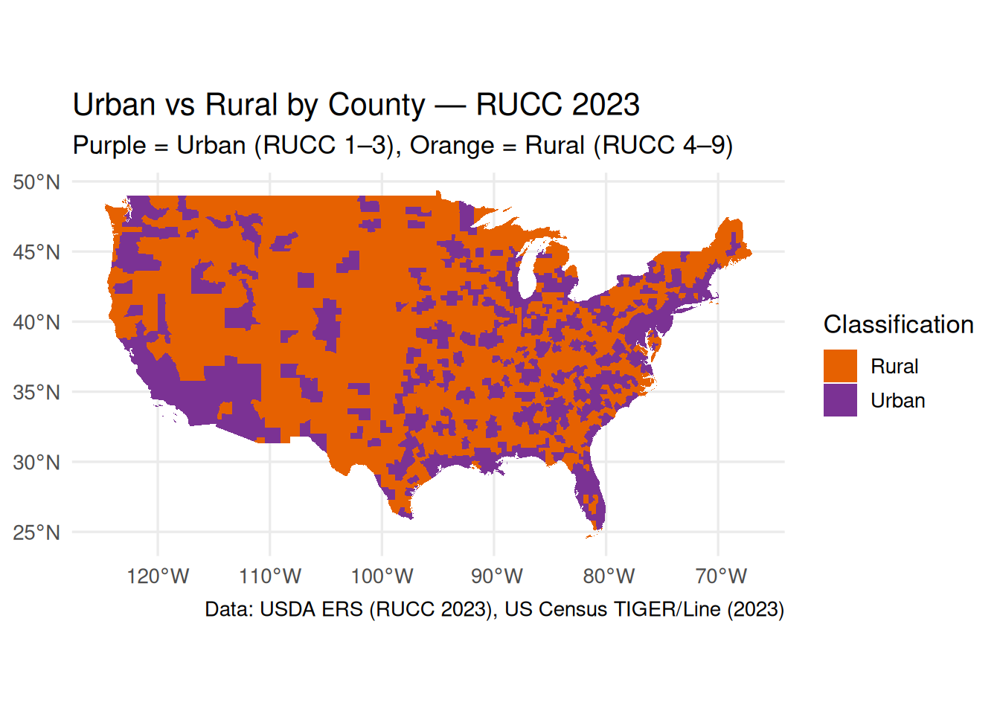

#download.file(
# url = "https://www.data.gouv.fr/api/1/datasets/r/98eb9dab-f328-4dee-ac08-ac17211357a8",
#destfile = "data/france_election_2022_R1_communes.csv",
# mode = "wb"
#)My Final Project Template
Spatial Data Science Project
Introduction
[~ 200 words]
This study aims to investigate the effects of different historical developments of ideological spectrum (left/right) on the relationship between urban-rural population distribution and the general election voting.
There are noted findings in the political science literature that rural areas tend to vote for right wing parties while more urban areas for left. However, different countries present different political histories, and in particular, the development of the breadth of left-right spectrum and the voters’ loyalty to their ideologies over time.
In this project, I compare the presidential elections of France-2022 and the USA-2020. I analyze how different the relationship between urban-rural population distribution and left-right voting behavior in France and in the USA.
I hypothesize that two reasons will effect differences in this relationship: first is the stronger tradition of left-wing politics in France; and the second is the wider spectrum of left-wing ideologies. The longer history of leftism can create a closer political affiliation between the rural population and the left-wing parties. The wider spectrum of political ideologies, on the other hand, can present various opportunities for political parties to establish rapport with the rural populations. This is because in a wider political spectrum, not only the number of parties are higher, but also the substantial issue positions adopted by parties can offer a higher variety in their combinations. In a biparty system, issue positions, such as A, B, C, D, are divided into two, while in a multiparty system the issue positions are not only divided into more sections, but also they are adopted by parties with overlaps such as Party-X can adopt A and B while Party-y can adopt B and D. Since France has a multi-party system, multiple parties can address the interests of the rural voters in different ways, preventing the concentration of vote.
*sidenote: I was not able to clear the initialization lines of the code below, I will deal with it later.
Materials and methods
[~ 200 words]
Data
French presidential elections in 2022
https://www.data.gouv.fr/datasets/election-presidentielle-des-10-et-24-avril-2022-resul- tats-definitifs-du-1er-tour/
French urban-rural population (last update 2020)
https://www.insee.fr/fr/information/4802589
download.file(
url = "https://www.insee.fr/fr/statistiques/fichier/4802589/UU2020_au_01-01-2025.zip",
destfile = "data/france_UU2020_commune.zip",
mode = "wb"
)French - Geometric Data for Matching *the file was too large, I will upload it later
US presidential elections in 2020*
https:// dataverse.harvard.edu/dataset.xhtml?persistentId=doi%3A10.7910%2FDVN%2FVOQCHQ&
data_US_elec <- readr::read_csv("data/countypres_2000-2024.csv")*I haven’t accomplish setting a download link for this set of data yet. American urban-rural population (last update 2023)
https:// www.ers.usda.gov/data-products/rural-urban-continuum-codes
download.file(
url = "https://ers.usda.gov/sites/default/files/_laserfiche/DataFiles/53251/Ruralurbancontinuumcodes2023.csv?v=36152",
destfile = "data/us_rucc_2023.csv",
mode = "wb"
)The Code
install.packages("sf")# Downloading packages -------------------------------------------------------
- Downloading sf from CRAN ... OK [9 Mb in 0.18s]
Successfully downloaded 1 package in 1.3 seconds.
The following package(s) will be installed:
- sf [1.0-22]
These packages will be installed into "~/work/Final_Proj/Final_Proj/renv/library/linux-ubuntu-noble/R-4.5/x86_64-pc-linux-gnu".
# Installing packages --------------------------------------------------------
- Installing sf ... OK [installed binary and cached in 0.8s]
Successfully installed 1 package in 0.96 seconds.install.packages("dplyr")The following package(s) will be installed:
- dplyr [1.1.4]
These packages will be installed into "~/work/Final_Proj/Final_Proj/renv/library/linux-ubuntu-noble/R-4.5/x86_64-pc-linux-gnu".
# Installing packages --------------------------------------------------------
- Installing dplyr ... OK [linked from cache]
Successfully installed 1 package in 6.1 milliseconds.install.packages("readr")The following package(s) will be installed:
- readr [2.1.5]
These packages will be installed into "~/work/Final_Proj/Final_Proj/renv/library/linux-ubuntu-noble/R-4.5/x86_64-pc-linux-gnu".
# Installing packages --------------------------------------------------------
- Installing readr ... OK [linked from cache]
Successfully installed 1 package in 6 milliseconds.install.packages("ggplot2")The following package(s) will be installed:
- ggplot2 [4.0.0]
- gtable [0.3.6]
- scales [1.4.0]
These packages will be installed into "~/work/Final_Proj/Final_Proj/renv/library/linux-ubuntu-noble/R-4.5/x86_64-pc-linux-gnu".
# Installing packages --------------------------------------------------------
- Installing gtable ... OK [linked from cache]
- Installing scales ... OK [linked from cache]
- Installing ggplot2 ... OK [linked from cache]
Successfully installed 3 packages in 19 milliseconds.install.packages("tigris")The following package(s) will be installed:
- tigris [2.2.1]
These packages will be installed into "~/work/Final_Proj/Final_Proj/renv/library/linux-ubuntu-noble/R-4.5/x86_64-pc-linux-gnu".
# Installing packages --------------------------------------------------------
- Installing tigris ... OK [linked from cache]
Successfully installed 1 package in 5.8 milliseconds.install.packages("classInt")The following package(s) will be installed:
- classInt [0.4-11]
These packages will be installed into "~/work/Final_Proj/Final_Proj/renv/library/linux-ubuntu-noble/R-4.5/x86_64-pc-linux-gnu".
# Installing packages --------------------------------------------------------
- Installing classInt ... OK [linked from cache]
Successfully installed 1 package in 5.7 milliseconds.install.packages("scales")The following package(s) will be installed:
- scales [1.4.0]
These packages will be installed into "~/work/Final_Proj/Final_Proj/renv/library/linux-ubuntu-noble/R-4.5/x86_64-pc-linux-gnu".
# Installing packages --------------------------------------------------------
- Installing scales ... OK [linked from cache]
Successfully installed 1 package in 5.5 milliseconds.install.packages("janitor")The following package(s) will be installed:
- janitor [2.2.1]
These packages will be installed into "~/work/Final_Proj/Final_Proj/renv/library/linux-ubuntu-noble/R-4.5/x86_64-pc-linux-gnu".
# Installing packages --------------------------------------------------------
- Installing janitor ... OK [linked from cache]
Successfully installed 1 package in 5.9 milliseconds.install.packages("stringr")The following package(s) will be installed:
- stringr [1.6.0]
These packages will be installed into "~/work/Final_Proj/Final_Proj/renv/library/linux-ubuntu-noble/R-4.5/x86_64-pc-linux-gnu".
# Installing packages --------------------------------------------------------
- Installing stringr ... OK [linked from cache]
Successfully installed 1 package in 6.4 milliseconds.install.packages("units")The following package(s) will be installed:
- units [1.0-0]
These packages will be installed into "~/work/Final_Proj/Final_Proj/renv/library/linux-ubuntu-noble/R-4.5/x86_64-pc-linux-gnu".
# Installing packages --------------------------------------------------------
- Installing units ... OK [linked from cache]
Successfully installed 1 package in 5.5 milliseconds.library(sf)Linking to GEOS 3.12.1, GDAL 3.8.4, PROJ 9.4.0; sf_use_s2() is TRUElibrary(dplyr)
Attaching package: 'dplyr'The following objects are masked from 'package:stats':
filter, lagThe following objects are masked from 'package:base':
intersect, setdiff, setequal, unionlibrary(readr)
library(ggplot2)
library(tigris)To enable caching of data, set `options(tigris_use_cache = TRUE)`
in your R script or .Rprofile.library(classInt)
library(scales)
Attaching package: 'scales'The following object is masked from 'package:readr':
col_factorlibrary(janitor)
Attaching package: 'janitor'The following objects are masked from 'package:stats':
chisq.test, fisher.testlibrary(stringr)
library(units)udunits database from /usr/share/xml/udunits/udunits2.xmllibrary(readr)
library(tidyr)Results - (Example Plot for First Draft)
options(tigris_use_cache = TRUE)
sf::sf_use_s2(FALSE)
## rucc codes
rucc_raw <- read_csv("data/us_rucc_2023.csv") |>
janitor::clean_names()
rucc <- rucc_raw |>
mutate(attribute = tolower(attribute)) |>
filter(attribute == "rucc_2023") |>
mutate(
geoid = sprintf("%05s", as.character(fips)),
rucc_code = as.integer(value)
) |>
select(geoid, rucc_code, state, county_name)
pop_attr <- unique(rucc_raw$attribute)
pop_name <- pop_attr[grepl("population_2020|pop_2020|population|pop", pop_attr, ignore.case = TRUE)][1]
if (!is.na(pop_name)) {
pop <- rucc_raw |>
filter(attribute == pop_name) |>
mutate(
geoid = sprintf("%05s", as.character(fips)),
population = suppressWarnings(as.numeric(value))
) |>
select(geoid, population)
} else {
pop <- tibble(geoid = character(), population = numeric())
}
counties <- tigris::counties(cb = TRUE, year = 2023) |>
st_as_sf() |>
janitor::clean_names() |>
mutate(geoid = geoid) |>
filter(
!statefp %in% c("02", "15"),
as.numeric(statefp) <= 56
)
|
| | 0%
|
| | 1%
|
|= | 1%
|
|= | 2%
|
|== | 2%
|
|== | 3%
|
|== | 4%
|
|=== | 4%
|
|=== | 5%
|
|==== | 5%
|
|==== | 6%
|
|===== | 6%
|
|===== | 7%
|
|===== | 8%
|
|====== | 8%
|
|====== | 9%
|
|======= | 10%
|
|======== | 12%
|
|========= | 13%
|
|========== | 15%
|
|=========== | 16%
|
|============= | 18%
|
|============== | 19%
|
|=============== | 21%
|
|================ | 23%
|
|================= | 24%
|
|================== | 26%
|
|=================== | 27%
|
|==================== | 29%
|
|===================== | 30%
|
|====================== | 32%
|
|======================= | 33%
|
|======================== | 35%
|
|========================== | 37%
|
|=========================== | 38%
|
|============================ | 40%
|
|============================= | 41%
|
|============================== | 43%
|
|=============================== | 44%
|
|================================ | 46%
|
|================================= | 47%
|
|================================== | 49%
|
|=================================== | 51%
|
|==================================== | 52%
|
|====================================== | 54%
|
|======================================= | 55%
|
|======================================== | 57%
|
|========================================= | 58%
|
|========================================== | 60%
|
|=========================================== | 62%
|
|============================================ | 63%
|
|============================================= | 65%
|
|============================================== | 66%
|
|=============================================== | 68%
|
|================================================= | 69%
|
|================================================== | 71%
|
|=================================================== | 72%
|
|==================================================== | 74%
|
|===================================================== | 75%
|
|====================================================== | 77%
|
|======================================================= | 79%
|
|======================================================== | 80%
|
|========================================================= | 82%
|
|========================================================== | 83%
|
|=========================================================== | 85%
|
|============================================================ | 86%
|
|============================================================= | 88%
|
|=============================================================== | 89%
|
|================================================================ | 91%
|
|================================================================= | 92%
|
|================================================================== | 94%
|
|=================================================================== | 96%
|
|==================================================================== | 97%
|
|==================================================================== | 98%
|
|======================================================================| 100%# County geometries
counties <- tigris::counties(cb = TRUE, year = 2023) |>
st_as_sf() |>
janitor::clean_names() |>
mutate(geoid = geoid) |>
filter(
!statefp %in% c("02", "15"),
as.numeric(statefp) <= 56
)
# Join data
us_map <- counties |>
left_join(rucc, by = "geoid") |>
left_join(pop, by = "geoid") |>
mutate(
urban_rural = case_when(
rucc_code %in% 1:3 ~ "Urban",
rucc_code %in% 4:9 ~ "Rural",
TRUE ~ NA_character_
)
)
message(sprintf("RUCC coverage: %.1f%%; Population coverage: %.1f%%",
100 * mean(!is.na(us_map$rucc_code)),
100 * mean(!is.na(us_map$population))))
print(us_map |>
st_drop_geometry() |>
count(urban_rural)) urban_rural n
1 Rural 1929
2 Urban 1180# Choropleth
p <- ggplot(us_map) +
geom_sf(aes(fill = urban_rural), color = NA) +
scale_fill_manual(
values = c("Urban" = "#7b3294", # purple
"Rural" = "#e66101"), # orange
na.value = "grey90",
drop = FALSE
) +
theme_minimal(base_size = 13) +
labs(
title = "Urban vs Rural by County — RUCC 2023",
subtitle = "Purple = Urban (RUCC 1–3), Orange = Rural (RUCC 4–9)",
fill = "Classification",
caption = "Data: USDA ERS (RUCC 2023), US Census TIGER/Line (2023)"
)
print(p)